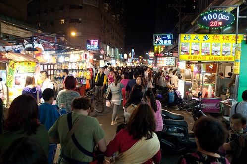
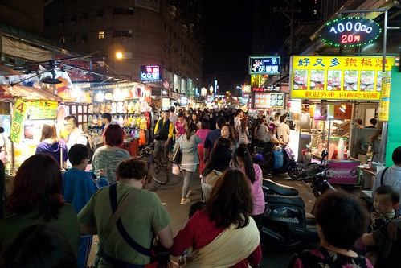

上週五晚上原本都已經準備好晚餐吃麵的材料 連蔥花都切好 只等徹爸快到家前的下麵條 沒想到六點開電腦幫阿徹查東西的時候 徹爸MSN傳來”想吃大餐” 我轉頭問徹愛”爸爸說他想吃大餐” 愛說”想吃涮涮鍋” 徹說”今天好熱揶”而且週五吃鍋的氣氛不太對 徹說”吃義大利麵” 我說”要吃外面義大利麵那不如就在家吃牛肉麵” 況且家裡冰箱還有義大利麵肉醬哩 愛又說了我們很常光顧的炒飯店 徹大喊”那很便宜不是大餐 而且我們常常吃” 母子三人熱烈討論一會 竟然說不出想吃又稱的上是大餐的店 真是有點慘(太少在外走條了) 突然 我靈機一動說那來去”吃”夜市吧! 我耳聞南雅夜市很久了 擇期不如撞日就是今晚吧!!! 於是我們家破天荒的在週五晚上出門去逛夜市~ 夜市出乎我們意外的熱鬧(我天真的以為人不會多) 也難得的完全沒踩到雷 只是逛夜市對我們來說果然是件累人的事 且我們依然不愔逛夜市門道… 週五的夜晚 一家子在家簡單吃 然後藉著遊戲或無所事事來犒賞週間的辛苦工作與上學 果然才最適合我們 今晚又是個令人期待的週五夜了~~~
趁著徹爸從內湖回到板橋前 趕緊花了半小時時間上網做些功課 畫了簡易地圖 列了一些網友推薦的好店 然後一家子7點半在捷運站會合一起搭公車去南雅夜市 難得週五晚上搭公車的我們才發現週五夜晚的街上是這樣熱鬧 這樣塞 短短兩站捷運站的距離 我們搭公車卻花了半小時 真的! 以後捷運可以到的地方還是坐捷運為佳  上公車跟司機問路後 才明白原來南雅夜市早就叫做板橋夜市 是板橋很重要的觀光重地 而我們卻在板橋住了八年了後才第一次來這逛夜市 公車上塞車的無聊時間我們討論著各自認為逛夜市非吃不可的食物 我說蚵仔煎 愛愛說地瓜球 阿徹則是雞排 我們說好 今天一定都要吃到! 只是一進到夜市看見兩旁琳瑯滿目的食物 還真熊熊有點不知道怎麼下手 幸好有先做功課 擬定個大概順序 首先先去來來牛排店吃一客牛排及一客鐵板麵 先讓已經餓到八點的肚子墊些東西 第一次吃這種夜市牛排的徹愛算是開了眼界 尤其是那個夜市獨特口味的濃湯 只是沒想到才吃完牛排 阿徹不知道是之前餓太久還是熱到了 竟然說”吃飽了 我們可以回家了” 啥咪~ 我們千里迢迢來到這 竟然吃個牛排就要回家 況且阿母的口袋食物還好多 牛排只是個”序” 不管怎樣今天一定要吃飽飽才能回家 況且還有沒有下次也不知道哩 所以我們發揮最高效率的一攤接一攤 第二個是豬血糕 外面沾著還帶有花生顆粒的豬血糕真的很好吃 連向來不愛吃這種豬血糕的徹爸也有稱讚 接著是要拿號碼牌等待的QQ球 也就是地瓜球 前所未見的大size地瓜球果然香Q好吃 獲得我們一致好評
上公車跟司機問路後 才明白原來南雅夜市早就叫做板橋夜市 是板橋很重要的觀光重地 而我們卻在板橋住了八年了後才第一次來這逛夜市 公車上塞車的無聊時間我們討論著各自認為逛夜市非吃不可的食物 我說蚵仔煎 愛愛說地瓜球 阿徹則是雞排 我們說好 今天一定都要吃到! 只是一進到夜市看見兩旁琳瑯滿目的食物 還真熊熊有點不知道怎麼下手 幸好有先做功課 擬定個大概順序 首先先去來來牛排店吃一客牛排及一客鐵板麵 先讓已經餓到八點的肚子墊些東西 第一次吃這種夜市牛排的徹愛算是開了眼界 尤其是那個夜市獨特口味的濃湯 只是沒想到才吃完牛排 阿徹不知道是之前餓太久還是熱到了 竟然說”吃飽了 我們可以回家了” 啥咪~ 我們千里迢迢來到這 竟然吃個牛排就要回家 況且阿母的口袋食物還好多 牛排只是個”序” 不管怎樣今天一定要吃飽飽才能回家 況且還有沒有下次也不知道哩 所以我們發揮最高效率的一攤接一攤 第二個是豬血糕 外面沾著還帶有花生顆粒的豬血糕真的很好吃 連向來不愛吃這種豬血糕的徹爸也有稱讚 接著是要拿號碼牌等待的QQ球 也就是地瓜球 前所未見的大size地瓜球果然香Q好吃 獲得我們一致好評  然後第三家小籠包店 同時來盤也獲網友推薦的臭豆腐
然後第三家小籠包店 同時來盤也獲網友推薦的臭豆腐  雖然臭豆腐有些令我們失望(當下還很慶幸只有叫一小盤) 但那個小籠包讓我跟徹爸很是驚艷 原本還擔心一籠太多吃不完 想不到兩人不顧燙的一口接一口 停不下來 好吃到徹爸還說 等下次徹愛出去玩不在家 我們兩人再來吃 然後是蚵子之家的蚵子煎 其實不愛吃蚵子的我 這麼愛蚵仔煎為的都是那漿與醬阿 最後兄妹倆玩了一盤打彈珠 果然還是嘉義公園的彈珠比較好打 老闆比較慷慨 兄妹倆在這都只拿到一顆沙士堂
雖然臭豆腐有些令我們失望(當下還很慶幸只有叫一小盤) 但那個小籠包讓我跟徹爸很是驚艷 原本還擔心一籠太多吃不完 想不到兩人不顧燙的一口接一口 停不下來 好吃到徹爸還說 等下次徹愛出去玩不在家 我們兩人再來吃 然後是蚵子之家的蚵子煎 其實不愛吃蚵子的我 這麼愛蚵仔煎為的都是那漿與醬阿 最後兄妹倆玩了一盤打彈珠 果然還是嘉義公園的彈珠比較好打 老闆比較慷慨 兄妹倆在這都只拿到一顆沙士堂  最後愛愛獨自加碼一隻糖葫蘆 是今天吃的最過癮 收穫最豐富的人 因為期間我們也一直找著雞排店 但想不到竟然完全找不著賣雞排的店家 一個沒有賣雞排的夜市讓我們很不可思議 也讓阿徹今晚完全沒獲得滿足 所以最後問徹愛今天晚上開不開心 兄妹倆的答案完全相反 不過偶而這樣一家子人來瘋去逛夜市 其實真的還挺新鮮有趣的 有些事就是要在衝動下才會做….. 
最後愛愛獨自加碼一隻糖葫蘆 是今天吃的最過癮 收穫最豐富的人 因為期間我們也一直找著雞排店 但想不到竟然完全找不著賣雞排的店家 一個沒有賣雞排的夜市讓我們很不可思議 也讓阿徹今晚完全沒獲得滿足 所以最後問徹愛今天晚上開不開心 兄妹倆的答案完全相反 不過偶而這樣一家子人來瘋去逛夜市 其實真的還挺新鮮有趣的 有些事就是要在衝動下才會做….. 